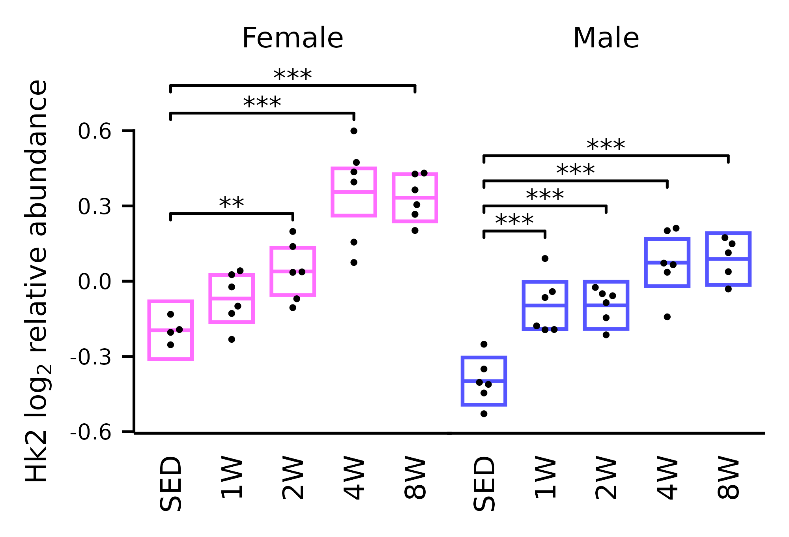

vignettes/articles/plot_Hk2.Rmd
plot_Hk2.RmdPlot of hexokinase 2 from the skeletal muscle proteomics data (Extended Data Fig. 1H).
library(MotrpacRatTraining6moData)
library(dplyr)
library(tidyr)
library(ggplot2)
library(emmeans)
library(ggpubr)
library(latex2exp)
save_plots <- dir.exists(paths = file.path("..", "..", "plots"))
# Hk2 values from normalized skeletal muscle proteomics data
x <- PROT_SKMGN_NORM_DATA %>%
left_join(dplyr::select(FEATURE_TO_GENE, feature_ID, gene_symbol),
by = "feature_ID", multiple = "all") %>%
relocate(gene_symbol, .after = feature_ID) %>%
filter(gene_symbol == "Hk2") %>%
dplyr::select(-c(feature_ID, gene_symbol, feature, tissue, assay)) %>%
pivot_longer(cols = everything(),
names_to = "viallabel",
values_to = "Hk2") %>%
left_join(dplyr::select(PHENO, viallabel, timepoint = group, sex),
by = "viallabel") %>%
mutate(sex = factor(sub("(.)", "\\U\\1", sex, perl = TRUE),
levels = c("Female", "Male")),
timepoint = ifelse(timepoint == "control",
"SED", toupper(timepoint)),
timepoint = factor(timepoint,
levels = c("SED", paste0(2 ^ (0:3), "W"))),
exp_group = paste0(substr(sex, 1, 1), "_", timepoint))
# Multiple regression model for Dunnett tests
fit <- lm(Hk2 ~ sex * timepoint, data = x)
summary(fit)
#>
#> Call:
#> lm(formula = Hk2 ~ sex * timepoint, data = x)
#>
#> Residuals:
#> Min 1Q Median 3Q Max
#> -0.281022 -0.059367 -0.001863 0.071578 0.243368
#>
#> Coefficients:
#> Estimate Std. Error t value Pr(>|t|)
#> (Intercept) -0.19544 0.05724 -3.414 0.00133 **
#> sexMale -0.20276 0.07390 -2.744 0.00857 **
#> timepoint1W 0.12631 0.07390 1.709 0.09399 .
#> timepoint2W 0.23438 0.07390 3.172 0.00267 **
#> timepoint4W 0.55110 0.07390 7.458 1.66e-09 ***
#> timepoint8W 0.52817 0.07390 7.148 4.89e-09 ***
#> sexMale:timepoint1W 0.17522 0.09914 1.767 0.08365 .
#> sexMale:timepoint2W 0.06757 0.09914 0.682 0.49884
#> sexMale:timepoint4W -0.07885 0.09914 -0.795 0.43045
#> sexMale:timepoint8W -0.04134 0.10132 -0.408 0.68511
#> ---
#> Signif. codes: 0 '***' 0.001 '**' 0.01 '*' 0.05 '.' 0.1 ' ' 1
#>
#> Residual standard error: 0.1145 on 47 degrees of freedom
#> Multiple R-squared: 0.8167, Adjusted R-squared: 0.7816
#> F-statistic: 23.27 on 9 and 47 DF, p-value: 1.826e-14
# Estimated marginal means and treatment vs. control (Dunnett) comparisons
fit.emm <- emmeans(fit, specs = "timepoint", by = "sex")
res <- contrast(fit.emm, method = "trt.vs.ctrl", infer = TRUE) %>%
summary() %>%
as.data.frame() %>%
mutate(signif = cut(p.value,
breaks = c(0, 0.001, 0.01, 0.05, 1),
labels = c("***", "**", "*", ""),
include.lowest = TRUE, right = FALSE,
ordered_result = TRUE))
# Confidence intervals
conf_df <- fit.emm %>%
summary(infer = TRUE) %>%
as.data.frame()
stats <- filter(res, signif != "")
# Plot
p <- ggplot(x, aes(x = timepoint, y = Hk2)) +
geom_crossbar(aes(x = timepoint, y = emmean,
ymin = lower.CL, ymax = upper.CL,
color = sex),
data = conf_df, fatten = 1, width = 0.7,
linewidth = 0.4, show.legend = FALSE) +
geom_point(shape = 16, size = 0.4,
position = ggbeeswarm::position_beeswarm(cex = 3,
dodge.width = 0.4)) +
facet_grid(~ sex) +
ggsignif::geom_signif(
data = stats,
mapping = aes(y_position = c(0.27, 0.67, 0.78, 0.10 + 1:4 * 0.1),
xmin = rep("SED", nrow(stats)),
xmax = sub(" .*", "", contrast),
annotations = signif),
textsize = 6 / .pt,
vjust = 0.25,
tip_length = 0.02,
color = "black",
size = 0.3,
manual = TRUE) +
labs(x = NULL, y = TeX("Hk2 log$_2$ relative abundance")) +
scale_color_manual(values = c("#ff6eff", "#5555ff")) +
scale_y_continuous(expand = expansion(mult = 5e-3)) +
coord_cartesian(ylim = c(-0.6, 0.6), clip = "off") +
theme_bw() +
theme(text = element_text(size = 6.5, color = "black"),
line = element_line(linewidth = 0.3, color = "black"),
axis.ticks = element_line(linewidth = 0.3, color = "black"),
panel.grid = element_blank(),
panel.border = element_blank(),
axis.ticks.x = element_blank(),
axis.text = element_text(size = 5,
color = "black"),
axis.text.x = element_text(size = 6.5, angle = 90, hjust = 1,
vjust = 0.5),
axis.title = element_text(size = 6.5, margin = margin(),
color = "black"),
axis.line = element_line(linewidth = 0.3),
strip.background = element_blank(),
strip.text = element_text(size = 6.5, color = "black",
margin = margin(b = 18, unit = "pt")),
panel.spacing = unit(-1, "pt"),
plot.title = element_text(size = 7, color = "black"),
plot.subtitle = element_text(size = 6, color = "black"),
legend.position = "none",
strip.placement = "outside"
)
p
ggsave(file.path("..", "..", "plots", "Hk2_skeletal_muscle.pdf"), p,
height = 1.7, width = 2.5, dpi = 400, bg = "white")
sessionInfo()
#> R version 4.4.0 (2024-04-24)
#> Platform: x86_64-pc-linux-gnu
#> Running under: Ubuntu 22.04.4 LTS
#>
#> Matrix products: default
#> BLAS: /usr/lib/x86_64-linux-gnu/openblas-pthread/libblas.so.3
#> LAPACK: /usr/lib/x86_64-linux-gnu/openblas-pthread/libopenblasp-r0.3.20.so; LAPACK version 3.10.0
#>
#> locale:
#> [1] LC_CTYPE=C.UTF-8 LC_NUMERIC=C LC_TIME=C.UTF-8
#> [4] LC_COLLATE=C.UTF-8 LC_MONETARY=C.UTF-8 LC_MESSAGES=C.UTF-8
#> [7] LC_PAPER=C.UTF-8 LC_NAME=C LC_ADDRESS=C
#> [10] LC_TELEPHONE=C LC_MEASUREMENT=C.UTF-8 LC_IDENTIFICATION=C
#>
#> time zone: UTC
#> tzcode source: system (glibc)
#>
#> attached base packages:
#> [1] stats graphics grDevices utils datasets methods base
#>
#> other attached packages:
#> [1] latex2exp_0.9.6 ggpubr_0.6.0
#> [3] emmeans_1.10.1 ggplot2_3.5.1
#> [5] tidyr_1.3.1 dplyr_1.1.4
#> [7] MotrpacRatTraining6moData_2.0.0
#>
#> loaded via a namespace (and not attached):
#> [1] sass_0.4.9 utf8_1.2.4 generics_0.1.3 rstatix_0.7.2
#> [5] stringi_1.8.3 digest_0.6.35 magrittr_2.0.3 evaluate_0.23
#> [9] grid_4.4.0 estimability_1.5 mvtnorm_1.2-4 fastmap_1.1.1
#> [13] jsonlite_1.8.8 backports_1.4.1 purrr_1.0.2 fansi_1.0.6
#> [17] scales_1.3.0 textshaping_0.3.7 jquerylib_0.1.4 abind_1.4-5
#> [21] cli_3.6.2 rlang_1.1.3 munsell_0.5.1 withr_3.0.0
#> [25] cachem_1.0.8 yaml_2.3.8 ggbeeswarm_0.7.2 tools_4.4.0
#> [29] memoise_2.0.1 ggsignif_0.6.4 colorspace_2.1-0 broom_1.0.5
#> [33] vctrs_0.6.5 R6_2.5.1 lifecycle_1.0.4 stringr_1.5.1
#> [37] fs_1.6.4 car_3.1-2 htmlwidgets_1.6.4 vipor_0.4.7
#> [41] ragg_1.3.0 beeswarm_0.4.0 pkgconfig_2.0.3 desc_1.4.3
#> [45] pkgdown_2.0.9 pillar_1.9.0 bslib_0.7.0 gtable_0.3.5
#> [49] glue_1.7.0 systemfonts_1.0.6 highr_0.10 xfun_0.43
#> [53] tibble_3.2.1 tidyselect_1.2.1 knitr_1.46 farver_2.1.1
#> [57] htmltools_0.5.8.1 labeling_0.4.3 carData_3.0-5 rmarkdown_2.26
#> [61] compiler_4.4.0